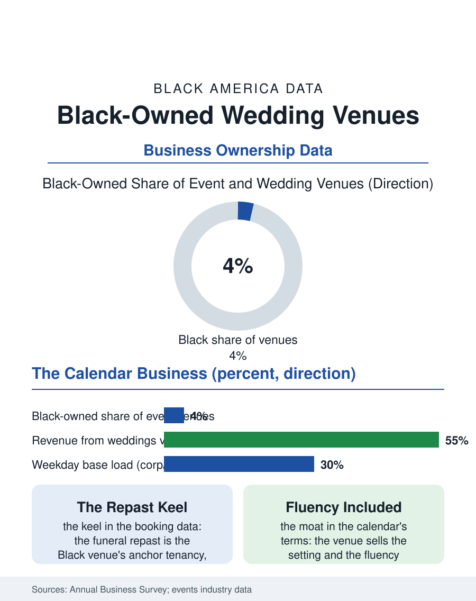

Black Business
The Ground of the Memory: Black-Owned Wedding Venues
The venue owns the ground the memory is made on: weddings on Saturday, repasts as the keel, and the corridor's whole ceremonial calendar under one roof. The venue file.

The Black-owned wedding venue sits at the intersection of the celebration economy's largest purchase and the property file's hardest asset: a hall, a barn, a mansion, or a rooftop whose calendar is the business. The business census counts the venues within the event and reception categories in the hundreds, their model distinct from the planner's: the venue owns the ground the memory is made on. This article reads the venue file.
Property as the Product
The venue's economics begin where the wedding business file's others end: the asset. The building, its grounds, its licenses, its liquor and occupancy permits, are the business, acquired with real estate capital at the market's general terms, which makes the Black venue owner first a property story, the deed of the banquet hall in the community corridor, the converted mansion on the historic street, the farm at the county's edge bought as the agritourism wave repriced the countryside. The revenue model is the calendar's density: the Saturday premium, the Friday and Sunday discounts, the weekday corporate and funeral repast bookings that fill the professional venue's base load, the repast being the Black venue's distinctive anchor tenancy, the funeral home file's overflow and the church hall's successor, a booking category whose steadiness through every economic cycle the owners cite as the business's keel. The bar is the margin's center where the license allows, and the catering relationship, in-house against the approved-list model, decides the venue's share of the wedding budget's largest line, the food and drink that the wedding file prices at half the total.
The Corridor's Ballroom
The venue's community position recapitulates the ballroom era's: the great halls of the Black social century, the Savoy's northern cousins and the Paradise Valley rooms, were the era's civic palaces, and the modern venue inherits the function with a business model, hosting the calendar the culture keeps, the weddings and the repasts, the cotillions and the anniversary galas, the fraternity balls and the church banquets, a year of the community's ceremonial life under one roof. The census categories scatter the trade among event spaces, caterers' halls, and drinking places, understating the venue count as the classification chases the mixed model. The competitive pressure comes from the hotel ballrooms' packages and the destination barn economy's volume, against which the community venue's defenses are its calendar's intimacy and its staff's fluency, the repast priced with the family's circumstances in mind, the wedding planned by people who know what the money dance and the broom require without the meeting to explain them. The financing file is the property file's: the venue mortgage underwritten on the building's mixed-use value, the SBA's real estate programs the standard instrument, and the pandemic era's scar tissue, the events industry's total shutdown and the refund litigation that followed, recorded in the trade data as the venue sector's defining trauma and its consolidation trigger, the survivors buying the failed at the recovery's prices.
The Calendar Ahead
The venue file closes on the calendar's future, which the demographics write: the wedding volume's recovery and the smaller, more expensive celebration's trend favor the distinctive venue over the generic ballroom, the historic mansion and the working farm and the industrial loft all appreciating as settings, and the Black-owned examples of each now market the setting and the fluency together to a clientele the platforms have made regional rather than neighborhood-bound. The succession and exit file is the property's again: the venue is among the most saleable of the celebration businesses because its asset is the ground, and the second generation's choice, operate the calendar or sell the deed, is the property owner's classic one. The census counts the venues modestly. The culture counts them as it counts its ballrooms, by the memories per acre: the weddings danced, the elders repasted, the cotillions photographed on the same stairs across forty years of one family's albums. The venue is the celebration economy's landlord, and in the Black corridor, the landlord is one of its own, which the file records as the oldest arrangement in the business section and the one the calendar, filling a year ahead, shows no sign of retiring. The bookings diary for next spring is already filling in the office's hand.
More in Black Business
Black-Owned Businesses: Counts, Receipts, and the Representation Gap
About 161,000 Black-owned employer firms and three million solo ventures: how the Census Bureau counts Black business ownership, where firms concentrate, and the gap between population share and business share.
Black Median Net Worth: The Wealth Gap in Federal Reserve Data
The Federal Reserve puts Black median family net worth at $44,900, against $285,000 for White families — about 16 cents on the dollar. The widest gap in economic data.
Black Buying Power: The $1.8 Trillion Consumer Economy
Black buying power is estimated at about $1.8 trillion — larger than the economy of most nations. What the figure measures, who produces it, and what it buys.
Source: U.S. Census Bureau, Annual Business Survey for event and reception venues; wedding and events industry reports.